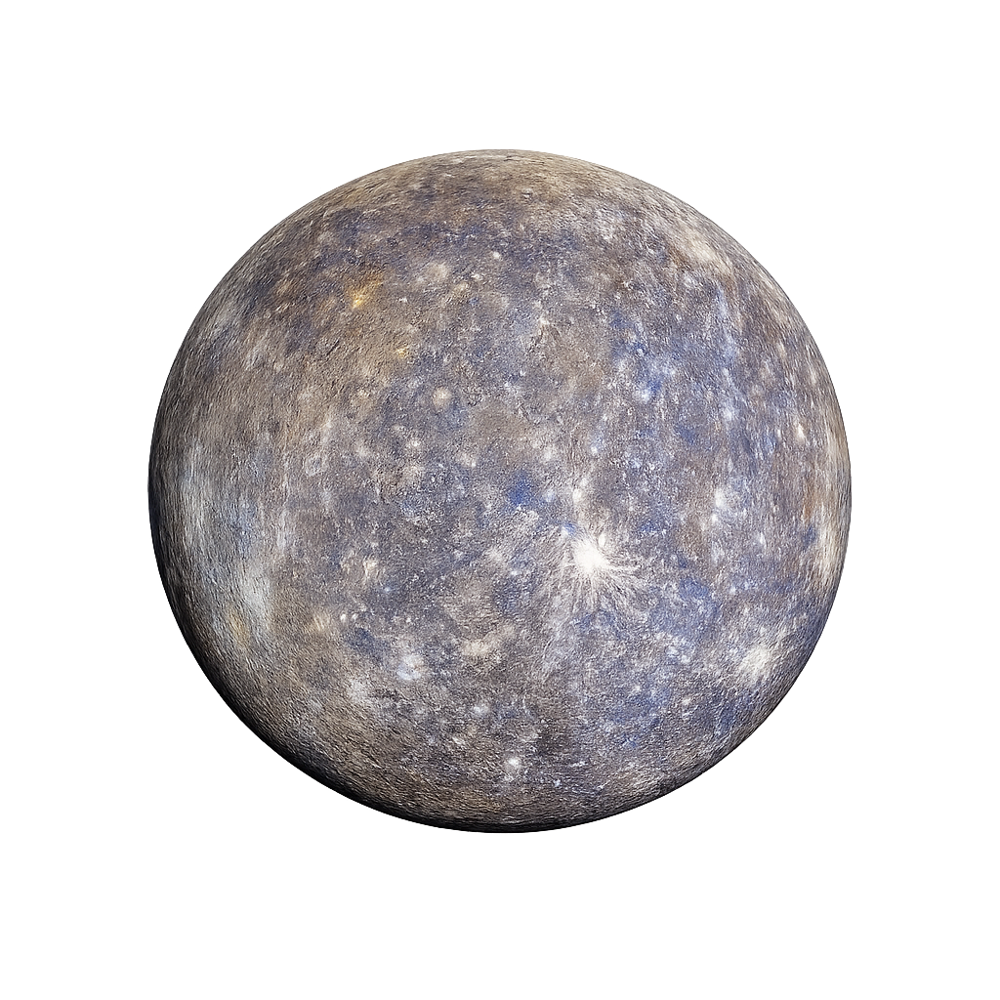
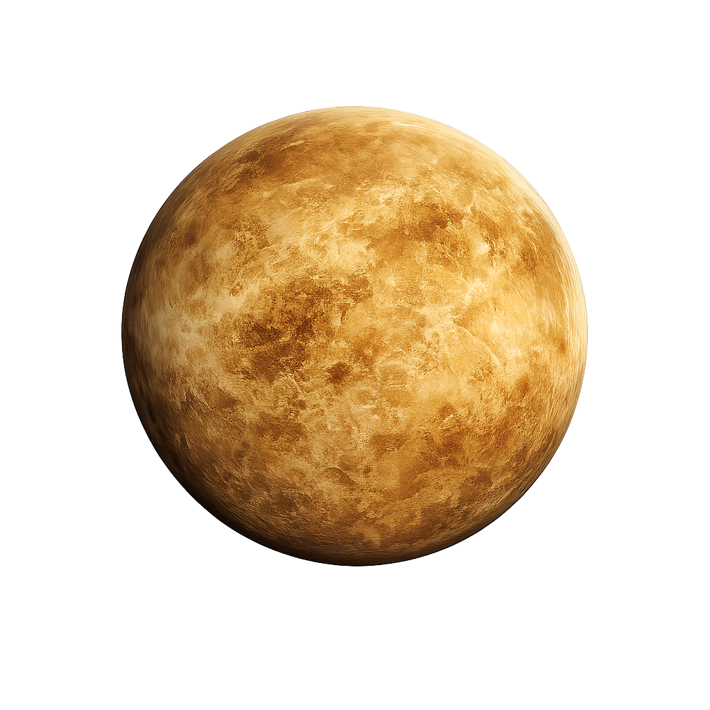
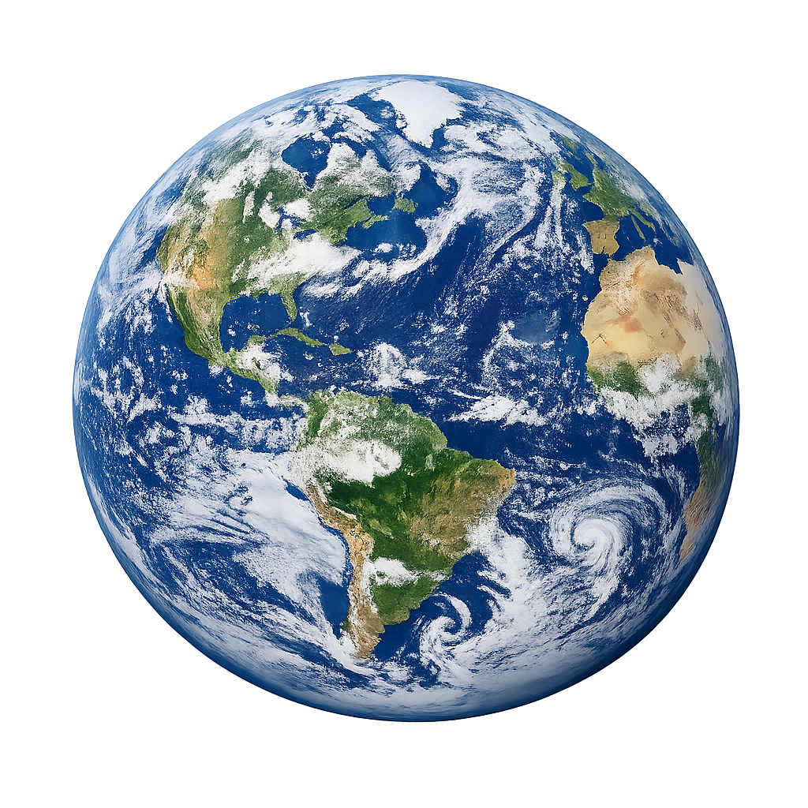
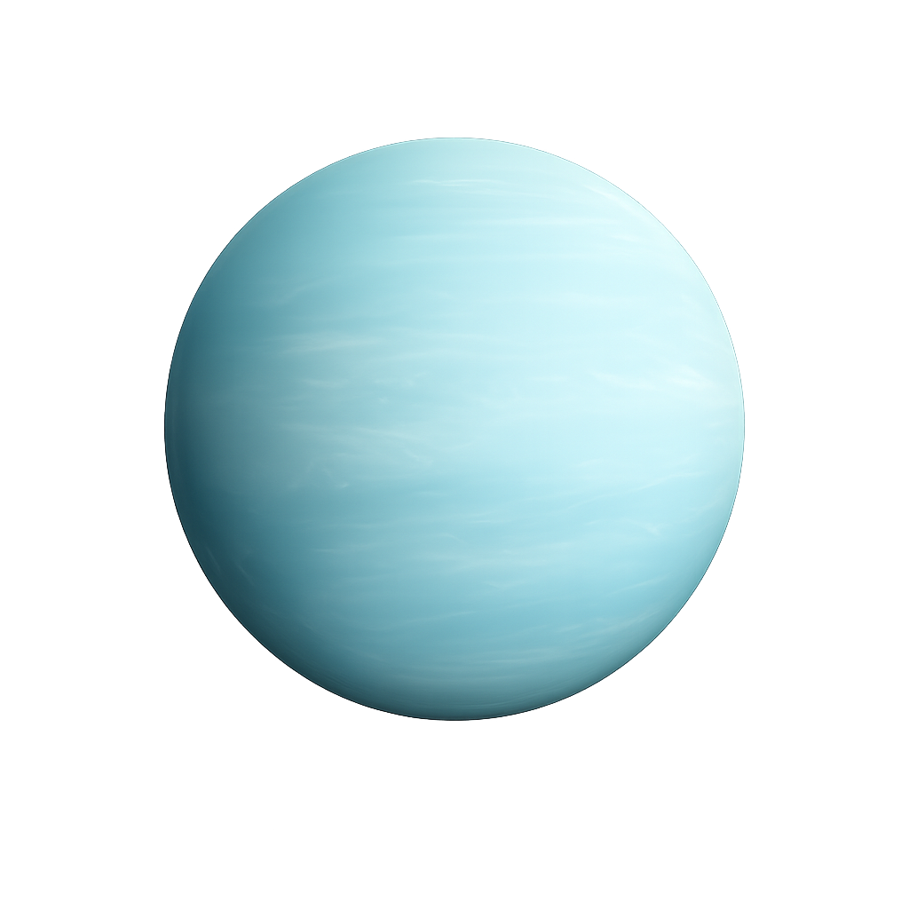
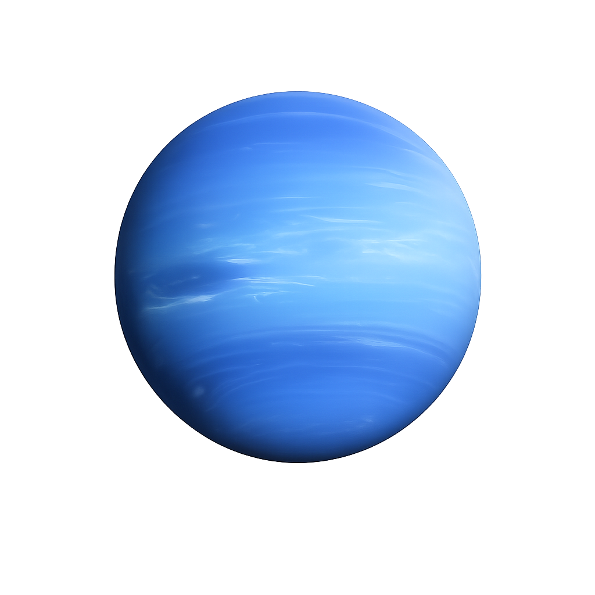

Descubra os planetas do nosso Sistema Solar e as curiosidades mais fascinantes do espaço.
— Os Planetas —

Mercúrio é o menor e mais interno planeta do Sistema Solar. Está tão próximo do Sol que um ano lá dura apenas 88 dias terrestres. Apesar de ser o mais próximo do Sol, não é o mais quente — essa honra pertence a Vênus.

Vênus é o planeta mais quente do Sistema Solar, com temperaturas que chegam a 465°C. Sua densa atmosfera de dióxido de carbono cria um efeito estufa extremo. Curiosamente, ele gira ao contrário em relação à maioria dos planetas.

Nosso lar é o único planeta conhecido a abrigar vida. Com 71% da superfície coberta por água líquida e uma atmosfera protetora, a Terra tem as condições perfeitas para a existência de seres vivos.

Chamado de Planeta Vermelho por sua superfície avermelhada rica em óxido de ferro, Marte abriga o Monte Olimpo — o vulcão mais alto do sistema solar, com 21 km de altitude.

Júpiter é o maior planeta do Sistema Solar, tão volumoso que caberia mais de mil Terras dentro dele. Sua Grande Mancha Vermelha é uma tempestade que dura há mais de 350 anos.

Saturno é o sexto planeta a partir do Sol e o segundo maior do Sistema Solar, conhecido principalmente por seu espetacular sistema de anéis. É um gigante gasoso, composto majoritariamente por hidrogênio e hélio, sem uma superfície sólida definida.

Urano é o único planeta que gira de lado, com seu eixo inclinado quase 98°. Isso significa que cada polo fica em luz solar contínua por 42 anos e depois em escuridão completa por outros 42 anos.

Netuno é o planeta mais distante do Sol e tem os ventos mais rápidos do Sistema Solar, chegando a 2.100 km/h. Só foi visitado por uma sonda uma única vez — a Voyager 2, em 1989.
— Você Sabia? —
A densidade de Saturno é tão baixa que, se houvesse um oceano grande o suficiente, ele flutuaria como um enorme isopor cósmico.
A enorme gravidade de Júpiter age como um escudo, capturando asteroides e cometas que poderiam atingir o interior do Sistema Solar.
Um dia marciano dura 24h e 37 minutos — quase idêntico ao da Terra, facilitando o planejamento de missões robóticas.
Apesar de se estenderem por 282 mil km, os anéis de Saturno têm apenas 10 a 30 metros de espessura em média.
Em Vênus, o Sol nasce no Oeste e se põe no Leste. Seu dia é mais longo que seu ano: uma volta completa no eixo demora 243 dias terrestres.
Apesar de ficar a 430°C durante o dia, as crateras nos polos de Mercúrio nunca recebem luz solar e guardam depósitos de gelo.
A atmosfera de Urano contém sulfeto de hidrogênio — o mesmo composto que dá o cheiro característico a ovos podres.
Tritão, a maior lua de Netuno, orbita o planeta na direção oposta à sua rotação. Por isso, está sendo lentamente puxada para dentro e um dia vai se despedaçar.
Por causa da rotação, a Terra é levemente achatada nos polos e mais larga no equador — ela é um geoide, não uma esfera perfeita.
A tempestade mais famosa de Júpiter já foi maior que três Terras. Hoje, ela tem o tamanho de apenas uma Terra e os cientistas ainda não sabem por quê.